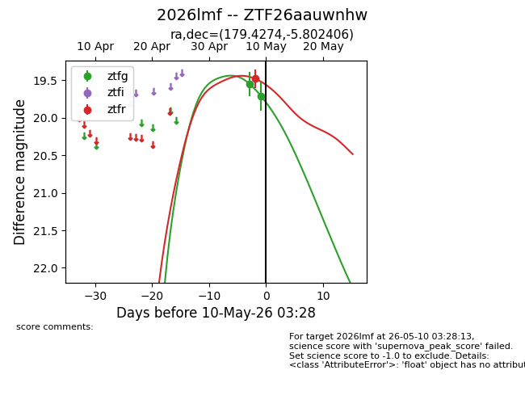
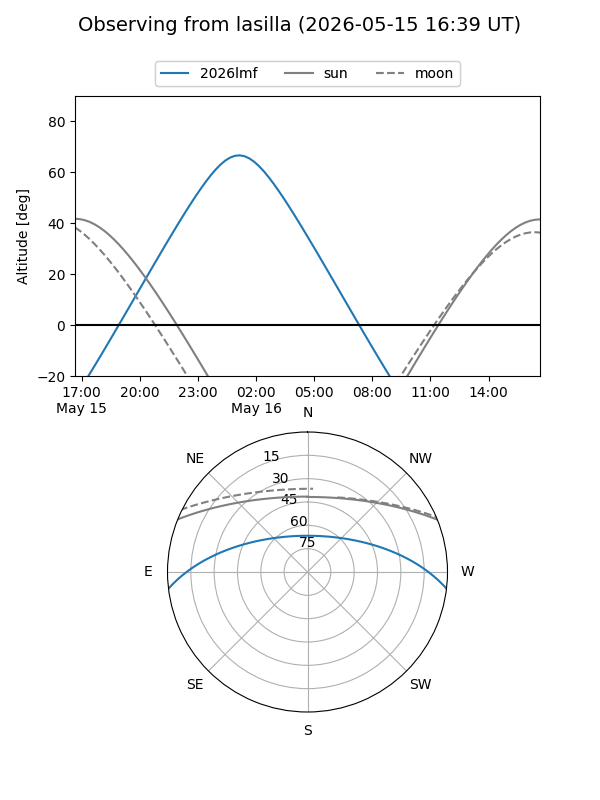
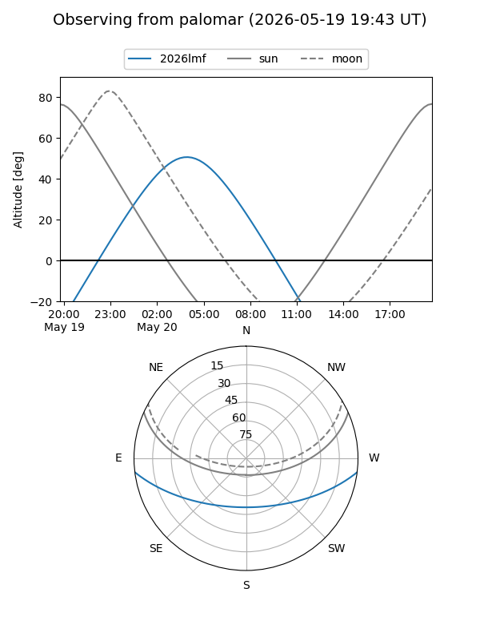
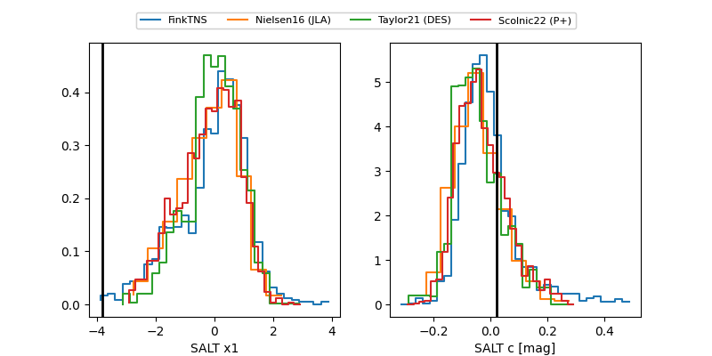

2026lmf
Target 2026lmf at 2026-05-10 03:29
Aliases and brokers:
FINK: link
Lasair: link
ALeRCE: link
TNS: link
YSE: link
alt names
ZTF26aauwnhw (ztf,fink_ztf)
2026lmf (tns,yse)
Coordinates:
equatorial (ra, dec) = 179.4274,-5.80241
equatorial (HMS+DMS) = 11:57:42.57,-05:48:08.66
galactic (l, b) = (279.4207,+54.59814)
Flags:
Photometry:
last ztfg=19.71, ztfr=19.48
2 ztfg, 1 ztfr detections
Lightcurve

Visibility


Additional plots
